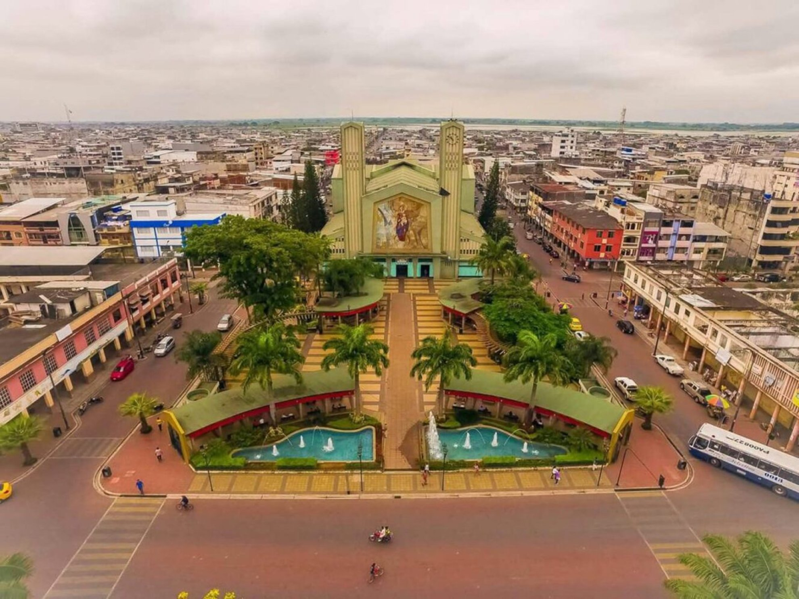
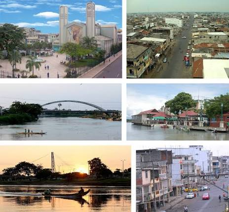
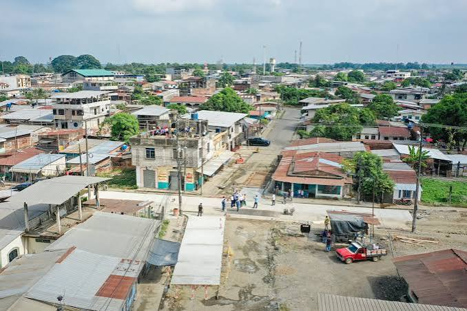
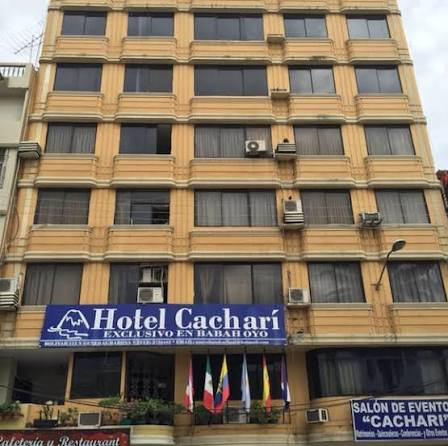
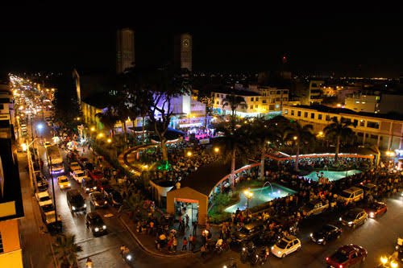

Atractivos Turísticos

Sobresalen el histórico Malecón 9 de Octubre, la Casa de Olmedo (donde se firmó el Tratado de La Virginia) y las icónicas casas flotantes sobre el río Babahoyo.

Bienvenido a la página oficial del cantón Babahoyo, capital administrativa de la provincia de Los Ríos, famosa por sus casas flotantes, su malecón y su intensa actividad comercial y agrícola.

Babahoyo fue erigido como cantón en 1824 y posteriormente designado como la capital de la provincia de Los Ríos. Históricamente ha sido un punto neurálgico de intercambio comercial gracias a su red fluvial de ríos que conectan la Costa con la Sierra.

El cantón Babahoyo se organiza territorialmente en parroquias urbanas y rurales:
Entre los platos más representativos de la capital fluminense destacan:
Sobresalen el histórico Malecón 9 de Octubre, la Casa de Olmedo (donde se firmó el Tratado de La Virginia) y las icónicas casas flotantes sobre el río Babahoyo.

Como capital provincial, dispone de una variada oferta hotelera que abarca desde hoteles ejecutivos de primera clase hasta hostales confortables y acogedores.
Alcalde: Gustavo Barquet

Cuenta con aproximadamente 175.000 habitantes, constituyéndose en el cantón más poblado del sur de la provincia de Los Ríos.
Se encuentra ubicado en el sur de la provincia de Los Ríos, a orillas del río Babahoyo, limitando con cantones como Baba, Puebloviejo, Montalvo y la provincia del Guayas.